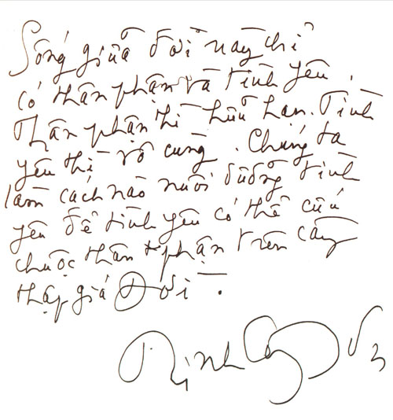
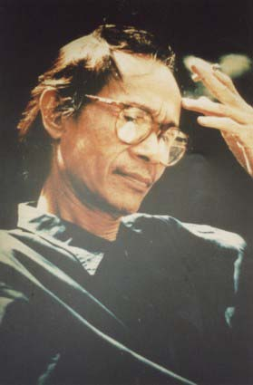

Mờ Sáng, trời Sài Gòn rất đẹp, đẹp để tiễn đưa Sơn. Mà cả mấy ngày nay không mưa để hoa xếp hàng ngoài ngõ nhà Sơn không bị ướt và nẫu đi. Một rừng hoa hôm nay đã được đưa lên xe chuyển đến nghĩa trang nơi "Một người sẽ nằm xuống". Việc giữ trật tự do mọi người tự tổ chức có sự hỗ trợ của lực lượng Công an không vất vả chút nào ở lễ mặc niệm vì rừng người kéo đến rất đông, nhưng rất tự giác giữ không khí trang nghiêm. Ngôi nhà Sơn không rộng nhưng vẫn đủ chỗ cho mọi tấm lòng yêu mến, hâm mộ và tiếc thương.
Tôi có mặt lúc 5h30, đã có nhiều người đến trước tôi để được cái may mắn vào thắp hương trước linh cữu Sơn. Mỗi người chỉ thắp một nén hương, nhưng riêng tôi xin phép thắp 3 nén vì trong đó có một nén cho Phan Đình Diệu ở Hà Nội, một nén chung cho các anh chị đã có yêu cầu tôi. Tôi xin lỗi chỉ thắp được có một nén thôi, vì nếu theo đúng yêu cầu của tất cả các anh chị thì bao nhiêu nén cho đủ, và làm sao đếm được tình cảm? (Sau đó thì phải tạm ngừng để các nhà sư thực hành những nghi lễ).
Đúng 6h10, nhạc sĩ Trần Long ẩn, bạn của Sơn, một người trong nhóm "Những người bạn" mà Sơn là Anh Cả, phó Tổng thư ký Hội Nhạc sĩ thành phố đọc điếu văn.
Vì tôi đã theo dõi hầu như tất cả những bài đã viết về Sơn trên báo và chưa thấy bài nào nói được điều mà mình nghĩ, nên nghe Trần Long ẩn, tôi thấy cảm động và sau đó, tôi có đến bắt tay cám ơn Trần Long Ẩn. Tôi cảm ơn vì nội dung có đánh giá Sơn là một nhạc sĩ thiên tài... và "nhạc sĩ Trịnh Công Sơn đã để lại cho đời, cho kho tàng âm nhạc
Việt Nam một tài sản âm nhạc đồ sộ và vô cùng quý giá. Nhưng cái đáng quý hơn hết mà anh để lại chính là con người anh với tất cả chiều kích và tầm vóc của một nhân cách lớn".
Ẩn có nói ngay với tôi “cảm động quá không kịp in để đưa cho nhà báo, họ đòi dữ quá". Như thế cũng có nghĩa là tạm được!
Sau điếu văn và lời cám ơn của Hà, em Sơn, thay mặt cho gia đình, các nhà sư bắt đầu tụng kinh siêu linh tịnh độ. Đúng 7h00 thì động quan, rất chính xác về thời gian.
Đi theo linh cữu, Trần Mạnh Tuấn cất lên tiếng kèn saxophone bài "Cát Bụi", bên cạnh Tuấn tôi cố kìm để thả hồn mình theo tiếng kèn, nhưng nỗi nhớ Sơn khiến nước mắt giàn dụa, tai ù đi.
Đến giữa chừng của ngõ nhà Sơn, Tuấn lại thổi bài "Một cõi đi về”, tôi đưa chai nước cho Tuấn uống để lấy giọng, thì vừa ra đến đầu ngõ, Tuấn thổi một bài tiếp nữa. Đường
Phạm Ngọc Thạch (tức là đường Duy Tân cũ) như lặng đi, xe cộ dừng hết cả lại (vì quá xúc động tôi không nhớ ra là bài gì nữa, chỉ biết đó là bài mình vẫn hát).
Linh cữu Sơn được đưa lên xe tang. Các em Sơn ngồi bên cạnh. Xe đi một vòng, đưa Sơn qua đường Trần Quốc Thảo, nơi có trụ sở Hội Nhạc sĩ mà ngày ngày Sơn vẫn hay qua lại sau đó đoàn xe đi về phía nghĩa trang Gò Dầu, nơi có mộ của mẹ Sơn.
Một dòng sông xe máy, xe ô tô, xe đạp... trôi từ từ trên đường Điện Biên Phủ và tăng tốc dần. Có lẽ đáng nói nhất là đoàn xe máy, xe "của những người hâm mộ" những công chúng vô danh vĩ đại mà tôi cho là tuyệt vời nhất, họ thực sự chiếm lĩnh con đường đưa Sơn về chốn "xa xăm cuối trời" của Sơn, và dòng sông xe cứ thế trôi. Thật hạnh phúc biết bao cho một nghệ sĩ có được một công chúng hâm mộ như vậy.
Nghĩa trang nơi có mộ mẹ Sơn là một nghĩa trang nhỏ, chưa bao giờ có một đám tang cỡ này cho nên đến đây thì có sự gay go. Phải có sức mạnh lực sĩ mới chen nổi vào nghĩa trang vì những người hâm mộ và yêu mến Sơn đã đến từ trước, họ chiếm lĩnh trận địa, kể cả bà con lối xóm ở gần nghĩa trang cũng kéo đến chật cứng. Tôi đành phó mặc số phận mình cho sự đưa đẩy của dòng thác người, trước mắt thấy thấp thoáng chiếc khăn tang của Tịnh, em Sơn, người cao nhất, thế là biết rằng cuối cùng mình cũng sẽ trôi đến nơi cần thiết.
Lễ hạ huyệt, trước lúc đó, Bửu ý đọc lời tiễn biệt của Huế, nơi Sơn đã dành một phần lớn trái tim mình. Cảm động nhất vẫn là điệu kèn saxophone của Trần Mạnh Tuấn. Cả không gian như quánh đặc lại cùng với tiếng kèn của “Lời thiên thu gọi". Tôi đã thực hiện yêu cầu của các anh chị là ném xuống mộ Sơn những bông hồng trắng, nhưng để cho đủ số hoa mà các bạn đã yêu cầu thì không sao đủ hoa hồng, tôi đành ném xuống hoa huệ trắng (thôi thì đành vậy, anh chị nào chọn bông hoa nào cho mình thì xin cứ tâm nguyện "Làm sao ta gặp, làm sao ta gặp được nhau”!).
Điều tôi muốn kể là tiếng hát đồng ca của đám tang, hát theo tiếng kèn của Mạnh Tuấn thì chỉ khe khẽ trong tim, nhưng sau đó thì đám đông trầm lắng trong "Biển Nhớ", và nhất là trong "Nối vòng tay lớn". Nhưng bài hát cứ vậy kéo dài mãi, và cứ thế người ta nói với người nghệ sĩ yêu mến của mình "Anh Sơn ơi, Anh đâu có chết, anh vẫn có mặt trên cõi đời này”. Bài hát “Cho một người nằm xuống được ai đó cất lên và cả đám tang lặng đi trong những lời hòa đồng nối tiếp. Tôi nghĩ rằng, nơi cõi xa xăm cuối trời kia, Sơn đang lặng lẽ mỉm cười "ta là ai mà còn khi dấu lệ, ta là ai mà còn trần gian thế”.
Một thảm hoa hồng trắng và hồng nhạt trải trên mộ Sơn. Mấy cô gái tài hoa và tỉ mỉ chọn những cánh hồng nhung đỏ thắm kết thành chữ "ANH SƠN" trên thảm hồng trăng nhạt. Và rồi, người ta nhặt những nhánh hồng và huệ cắm chung quanh thảm hoa đắp trên mộ Sơn làm thành một vườn hoa hồng và huệ.
Tôi không nghĩ đây là sự sắp đặt trước của ai đó. Mà đây là ngẫu hứng của những bạn bè, những người hâm mộ đã liên cảm được với tâm hồn nhà nghệ sĩ tài hoa đang mỉm cười dưới chiếc thảm hoa mà cuộc đời đang đắp cho Anh đấy thôi, thảm hoa nằm giữa một vườn hoa . Tôi lãng mạn quá chăng? Hình như không, tôi vẫn nhớ, con gái tôi lưu ý tôi nên đưa vào đây hình ảnh của hai ông lão hành khất (?), một người mù, một người chỉ còn một chân, đã dìu nhau vào đề nghị Ban Tổ chức lễ tang hướng dẫn họ vào thắp hương cho nghệ sĩ của mọi người vừa nằm xuống.., rồi hình ảnh nhóm Nhà Sư mặc áo cà sa vàng đến hành lễ tưởng niệm, và sau đó, trước Bàn thờ và linh cữu Sơn, họ đã đồng ca bài "Một cõi đi về", đấy là câu chuyện của ngày viếng trước hôm 4/4/2001 đưa tang.
Nhưng có điều này thì hình như trái với điều mà Sơn cảnh báo: “đôi tay nhân gian chưa từng độ lượng". Tôi sai chăng?
Một anh bạn thân của tôi, anh Nguyễn Trọng Huấn nhặt một bài thơ trên giấy trắng đặt trên tấm thảm hoa đắp cho Sơn. Tác giả, một sinh viên Đại học Khoa học Xã hội và Nhân văn Tp. Hồ Chí Minh ngăn lại "Đừng chú ơi. Cháu muốn để đấy cho Anh Sơn đọc. Vì cháu viết cho anh ấy mà. Nếu chú thích thì cháu đọc cho chú chép vậy".
Và đương nhiên là anh bạn tôi chép, và vừa rồi đã đọc qua điện thoại cho tôi vì biết tôi đang thông tin cho các bạn.
Bài thơ như sau:
KíNH VIếNG ANH SƠN
Bao năm giữa chốn vô thường
Người đi bỏ lại con đường vô vi
Một đời hát khúc tình si
Một ngày gió bụi cuốn đi phong trần
Cát bụi kia, cũng một lần
Phôi pha để trả nợ nần thế gian
Cuộc đời rồi cũng sang ngang
Một đời rồi cũng lỡ làng một phen.
Trước khi về nhà, tôi đã kịp đưa cho Hà, em Sơn, những bức thư các anh chị gửi cho tôi mà tôi đã in ra, nhờ Hà đặt trên bàn thờ Sơn, thắp một nén nhang.
Thôi thì cũng là "Ngàn dâu cố quận muôn trùng nhớ thương... Bỏ xa xôi yêu và gần gũi. Bỏ mặc tôi buồn...".
Chiều ngày 4/4/2001